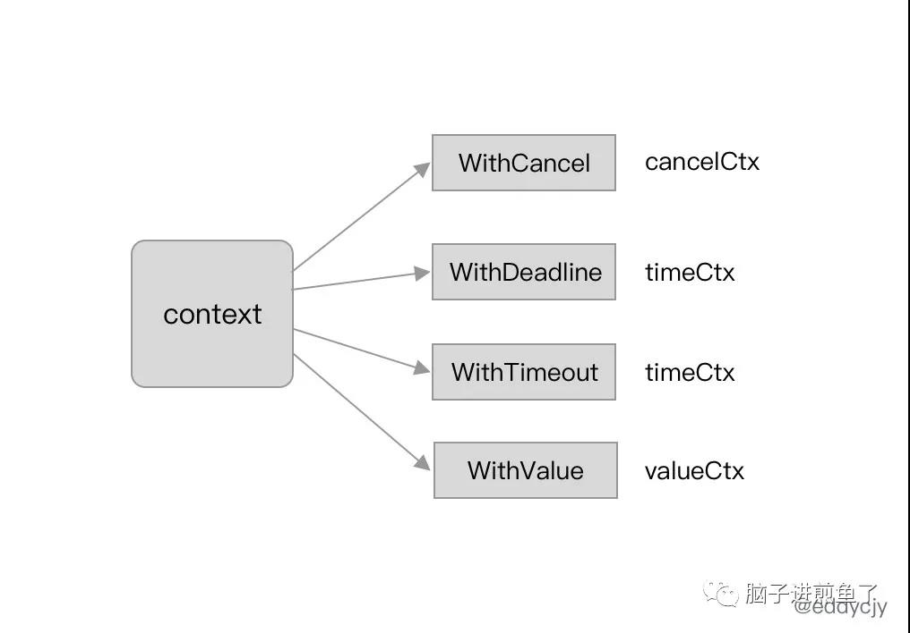
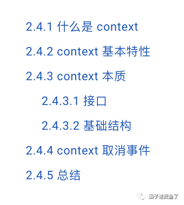
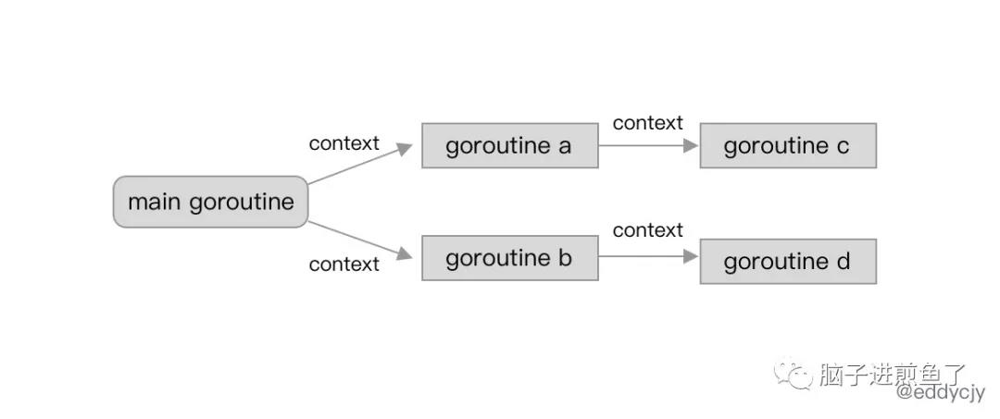
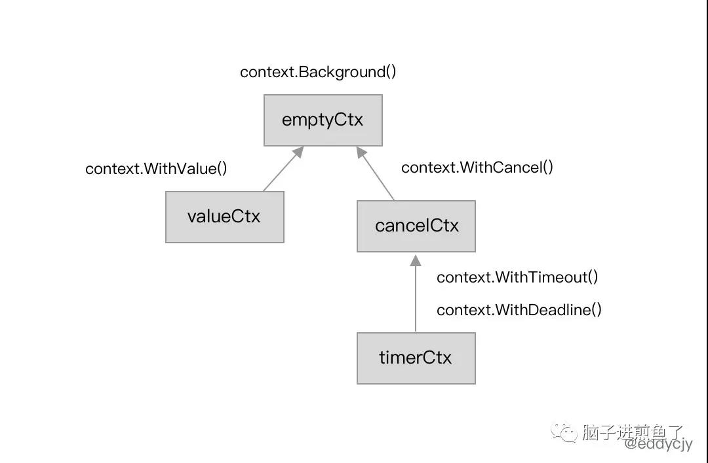
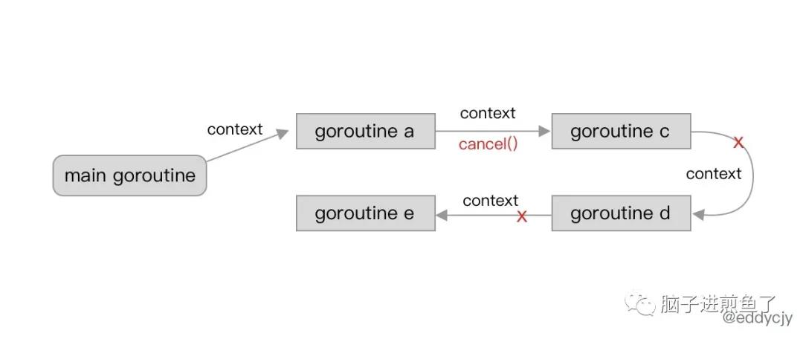
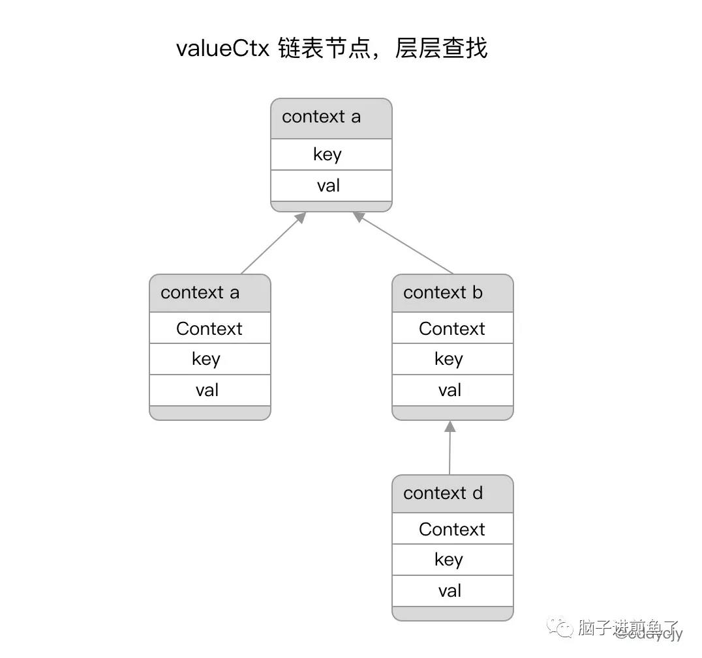
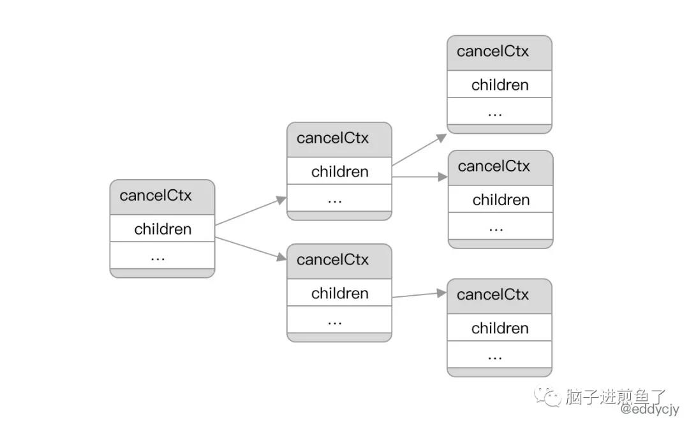

一文吃透 Go 语言解密之上下文 context
上下文（Context）是 Go 语言中非常有特色的一个特性， 在 Go 1.7 版本中正式引入新标准库 context。
其主要的作用是在 goroutine 中进行上下文的传递，而在传递信息中又包含了 goroutine 的运行控制、上下文信息传递等功能。

为加强大家对 Go 语言的 context 的设计，本文将对标准库 context 进行深入剖析，看看他里面到底暗含了何物，又为何能够做那么多事。
整体的描述结构是：“了解 context 特性，熟悉 context 流程，剖析 context 原理” 三个板块进行。目录如下：

什么是 context
Go 语言的独有的功能之一 Context，最常听说开发者说的一句话就是 “函数的第一个形参真的要传 ctx 吗？”，第二句话可能是 “有没有什么办法不传，就能达到传入的效果？”，听起来非常魔幻。
在 Go 语言中 context 作为一个 “一等公民” 的标准库，许多的开源库都一定会对他进行支持，因为标准库 context 的定位是上下文控制。会在跨 goroutine 中进行传播：

本质上 Go 语言是基于 context 来实现和搭建了各类 goroutine 控制的，并且与 select-case联合，就可以实现进行上下文的截止时间、信号控制、信息传递等跨 goroutine 的操作，是 Go 语言协程的重中之重。
context 基本特性
演示代码：
1 | func main() { |
输出结果：
1 | context deadline exceeded |
我们通过调用标准库 context.WithTimeout 方法针对 parentCtx 变量设置了超时时间，并在随后调用 select-case 进行 context.Done 方法的监听，最后由于达到截止时间。因此逻辑上 select 走到了 context.Err 的 case 分支，最终输出 context deadline exceeded。
除了上述所描述的方法外，标准库 context 还支持下述方法：
1 | func WithCancel(parent Context) (ctx Context, cancel CancelFunc) |
- WithCancel：基于父级 context，创建一个可以取消的新 context。
- WithDeadline：基于父级 context，创建一个具有截止时间（Deadline）的新 context。
- WithTimeout：基于父级 context，创建一个具有超时时间（Timeout）的新 context。
- Background：创建一个空的 context，一般常用于作为根的父级 context。
- TODO：创建一个空的 context，一般用于未确定时的声明使用。
- WithValue：基于某个 context 创建并存储对应的上下文信息。
context 本质
我们在基本特性中介绍了不少 context 的方法，其基本大同小异。看上去似乎不难，接下来我们看看其底层的基本原理和设计。
context 相关函数的标准返回如下：
1 | func WithXXXX(parent Context, xxx xxx) (Context, CancelFunc) |
其返回值分别是 Context 和 CancelFunc，接下来我们将进行分析这两者的作用。
接口
\1. Context 接口：
1 | type Context interface { |
- Deadline：获取当前 context 的截止时间。
- Done：获取一个只读的 channel，类型为结构体。可用于识别当前 channel 是否已经被关闭，其原因可能是到期，也可能是被取消了。
- Err：获取当前 context 被关闭的原因。
- Value：获取当前 context 对应所存储的上下文信息。
\2. Canceler 接口：
1 | type canceler interface { |
- cancel：调用当前 context 的取消方法。
- Done：与前面一致，可用于识别当前 channel 是否已经被关闭。
基础结构
在标准库 context 的设计上，一共提供了四类 context 类型来实现上述接口。分别是 emptyCtx、cancelCtx、timerCtx 以及 valueCtx。

emptyCtx
在日常使用中，常常使用到的 context.Background 方法，又或是 context.TODO 方法。
源码如下：
1 | var ( |
其本质上都是基于 emptyCtx 类型的基本封装。而 emptyCtx 类型本质上是实现了 Context 接口：
1 | type emptyCtx int |
实际上 emptyCtx 类型的 context 的实现非常简单，因为他是空 context 的定义，因此没有 deadline，更没有 timeout，可以认为就是一个基础空白 context 模板。
cancelCtx
在调用 context.WithCancel 方法时，我们会涉及到 cancelCtx 类型，其主要特性是取消事件。源码如下：
1 | func WithCancel(parent Context) (ctx Context, cancel CancelFunc) { |
其中的 newCancelCtx 方法将会生成出一个可以取消的新 context，如果该 context 执行取消，与其相关联的子 context 以及对应的 goroutine 也会收到取消信息。
首先 main goroutine 创建并传递了一个新的 context 给 goroutine b，此时 goroutine b 的 context 是 main goroutine context 的子集：

传递过程中，goroutine b 再将其 context 一个个传递给了 goroutine c、d、e。最后在运行时 goroutine b 调用了 cancel 方法。使得该 context 以及其对应的子集均接受到取消信号，对应的 goroutine 也进行了响应。
接下来我们针对 cancelCtx 类型来进一步看看：
1 | type cancelCtx struct { |
该结构体所包含的属性也比较简单，主要是 children 字段，其包含了该 context 对应的所有子集 context，便于在后续发生取消事件的时候进行逐一通知和关联。
而其他的属性主要用于并发控制（互斥锁）、取消信息和错误的写入：
1 | func (c *cancelCtx) Value(key interface{}) interface{} { |
在上述代码中可以留意到，done 属性（只读 channel）是在真正调用到 Done 方法时才会去创建。需要配合 select-case 来使用。
timerCtx
在调用 context.WithTimeout 方法时，我们会涉及到 timerCtx 类型，其主要特性是 Timeout 和 Deadline 事件，源码如下：
1 | func WithTimeout(parent Context, timeout time.Duration) (Context, CancelFunc) { |
你可以发现 timerCtx 类型是基于 cancelCtx 类型的。我们再进一步看看 timerCtx 结构体：
1 | type timerCtx struct { |
其实 timerCtx 类型也就是 cancelCtx 类型，加上 time.Timer 和对应的 Deadline，也就是包含了时间属性的控制。
我们进一步看看其配套的 cancel 方法，思考一下其是如何进行取消动作的：
1 | func (c *timerCtx) Deadline() (deadline time.Time, ok bool) { |
先会调用 cancelCtx 类型的取消事件。若存在父级节点，则移除当前 context 子节点，最后停止定时器并进行定时器重置。而 Deadline 或 Timeout 的行为则由 timerCtx 的 WithDeadline 方法实现：
1 | func WithDeadline(parent Context, d time.Time) (Context, CancelFunc) { |
该方法会先进行前置判断，若父级节点的 Deadline 时间早于当前所指定的 Deadline 时间，将会直接生成一个 cancelCtx 的 context。
1 | func WithDeadline(parent Context, d time.Time) (Context, CancelFunc) { |
接下来将会正式生成成为一个 timeCtx 类型，并将其加入到父级 context 是 children 属性中。最后进行当前时间与 Deadline 时间的计算，并通过调用 time.AfterFunc 在到期后自动调用 cancel 方法发起取消事件，自然也就会触发父子级的事件传播。
valueCtx
在调用 context.WithValue 方法时，我们会涉及到 valueCtx 类型，其主要特性是涉及上下文信息传递，源码如下：
1 | func WithValue(parent Context, key, val interface{}) Context { |
你会发现 valueCtx 结构体也非常的简单，核心就是键值对：
1 | type valueCtx struct { |
其在配套方法上也不会太复杂，基本就是要求可比较，接着就是存储匹配：
1 | func (c *valueCtx) Value(key interface{}) interface{} { |
这时候你可能又有疑问了，那多个父子级 context 是如何实现跨 context 的上下文信息获取的？
这秘密其实在上面的 valueCtx 和 Value 方法中有所表现：

本质上 valueCtx 类型是一个单向链表，会在调用 Value 方法时先查询自己的节点是否有该值。若无，则会通过自身存储的上层父级节点的信息一层层向上寻找对应的值，直到找到为止。
而在实际的工程应用中，你会发现各大框架，例如：gin、grpc 等。他都是有自己再实现一套上下文信息的传输的二次封装，本意也是为了更好的管理和观察上下文信息。
context 取消事件
在我们针对 context 的各类延伸类型和源码进行了分析后。我们进一步提出一个疑问点，context 是如何实现跨 goroutine 的取消事件并传播开来的，是如何实现的？
这个问题的答案就在于 WithCancel 和 WithDeadline 都会涉及到 propagateCancel 方法，其作用是构建父子级的上下文的关联关系，若出现取消事件时，就会进行处理：
1 | func propagateCancel(parent Context, child canceler) { |
- 当父级上下文（parent）的
Done结果为nil时，将会直接返回，因为其不会具备取消事件的基本条件，可能该 context 是Background、TODO等方法产生的空白 context。 - 当父级上下文（parent）的
Done结果不为nil时，则发现父级上下文已经被取消，作为其子级，该 context 将会触发取消事件并返回父级上下文的取消原因。
1 | func propagateCancel(parent Context, child canceler) { |
经过前面一个代码片段的判断，已得知父级 context 未触发取消事件，当前父级和子级 context 均正常（未取消）。
将会执行以下流程：
- 调用
parentCancelCtx方法找到具备取消功能的父级 context。并将当前 context，也就是child加入到 父级 context 的 children 列表中，等待后续父级 context 的取消事件通知和响应。 - 调用
parentCancelCtx方法没有找到，将会启动一个新的 goroutine 去监听父子 context 的取消事件通知。
通过对 context 的取消事件和整体源码分析，可得知 cancelCtx 类型的上下文包含了其下属的所有子节点信息：

也就是其在 children 属性的 map[canceler]struct{} 存储结构上就已经支持了子级关系的查找，也就自然可以进行取消事件传播了。
而具体的取消事件的实际行为，则是在前面提到的 propagateCancel 方法中，会在执行例如cacenl 方法时，会对父子级上下文分别进行状态判断，若满足则进行取消事件，并传播给子级同步取消。
总结
作为 Go 语言的核心功能之一，其实标准库 context 非常的短小精悍，使用的都是基本的数据结构和理念。既满足了跨 goroutine 的调控控制，像是并发、超时控制等。
同时也满足了上下文的信息传递。在工程应用中，例如像是链路ID、公共参数、鉴权校验等，都会使用到 context 作为媒介。
目前官方对于 context 的建议是作为方法的首参数传入，虽有些麻烦，但也有人选择将其作为结构体中的一个属性传入。但这也会带来一些心智负担，需要识别是否重新 new 一个。
也有人提出希望 Go2 取消掉 context，换成另外一种方法，但总体而言目前未见到正式的提案，这是我们都需要再思考的。